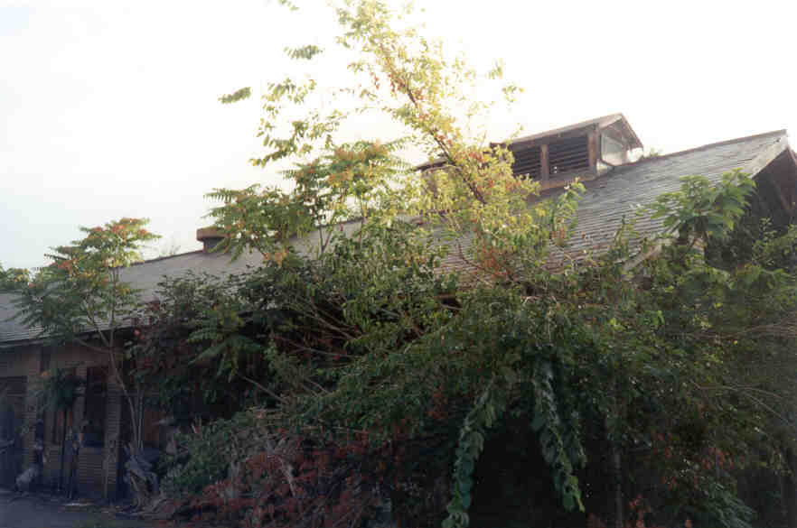
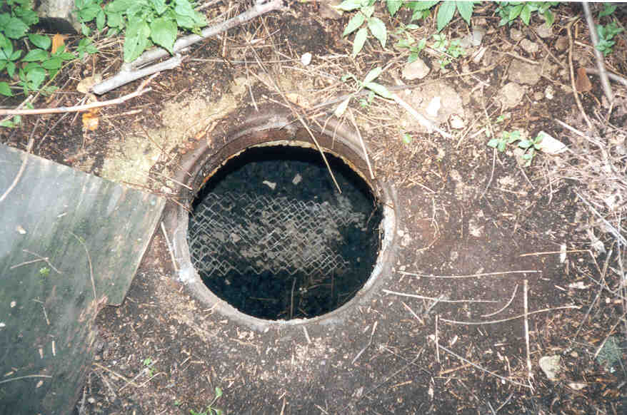
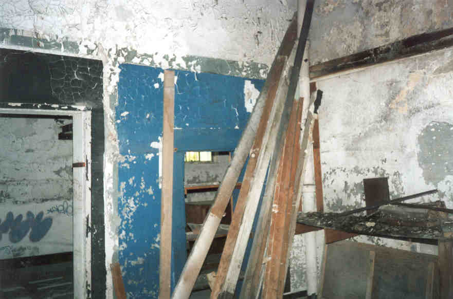
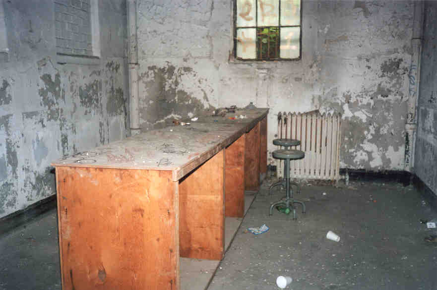
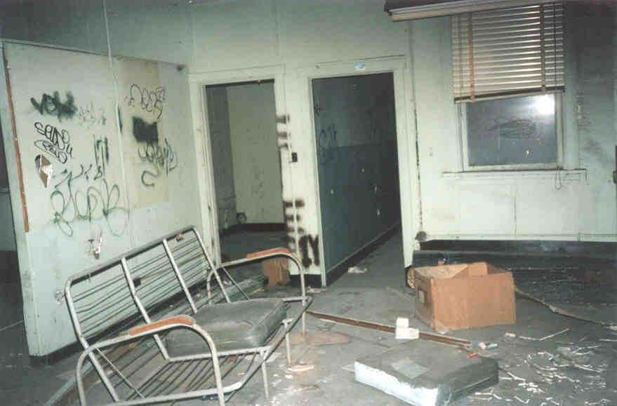
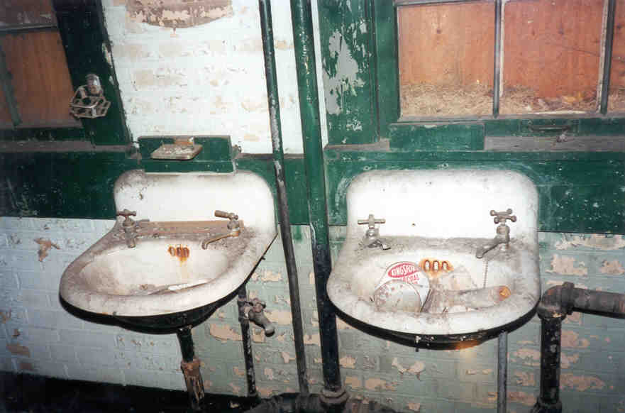
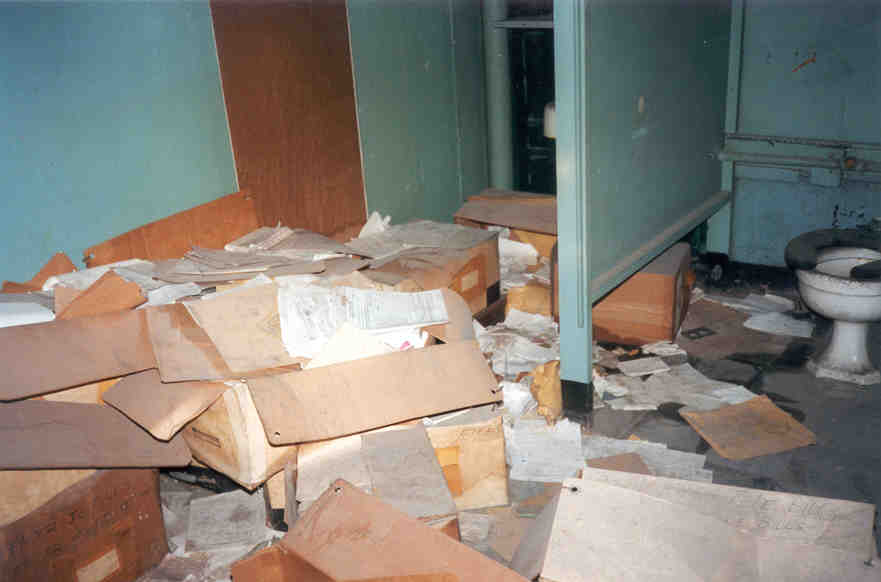
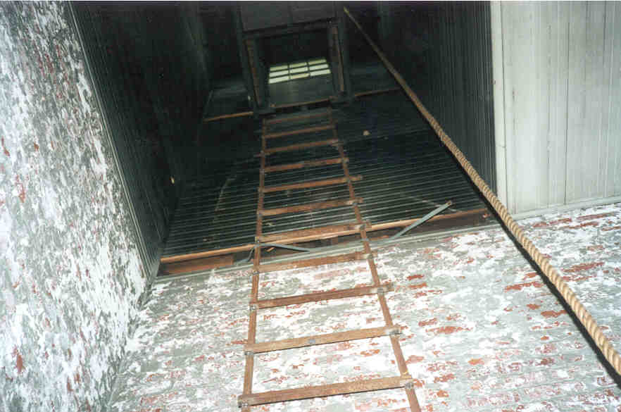
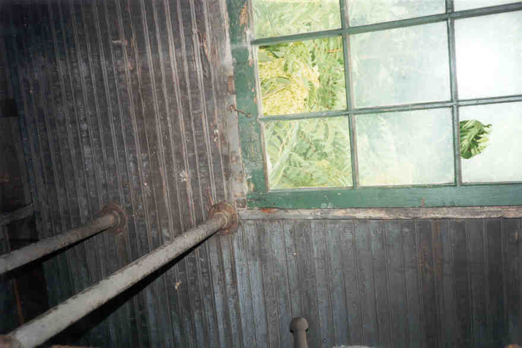

The Shop

One of the better-hidden buildings at Fort Hayes is the shop. What kind of shop, you're asking? Woodshop, metal shop--you name it. The facilities are all housed in a long building hidden behind the still-occupied headquarters and messhall. To get there you have to go down a narrow path between stacks of discarded metal and scrap wood, and then approach the building from the side, where a board over a window swings loose. The building is absolutely choked by ivy and high weeds on the outside. Looking out a window makes you feel like you're in prison, the ivy is so dense. Nearby are several manholes, through which underground chambers full of ash are visible.

Once inside we could tell it was a shop of some kind. There was old lumber propped against the walls and, in a back room, a workbench with stools. People had written their names all over the workbench, but that seemed unusual, since Fort Hayes is generally pretty low on graffiti.


J. told me that when he was in here before he encountered kids hanging out, smoking marijuana. We found their little campsite.

Also in the Shop was another dirty old bathroom. This one featured sinks with the old-fashioned separate faucets for the hot and cold, and a huge pile of old invoices and forms.


Bathroom
The coolest thing about this building was the ladder that went up way too high in one of the corner rooms and ended up on a narrow wooden plank in a kind of turret with two windows and two vents. It seemed more like an exhaust thing than a lookout point, but it could have served as either. A pulley was hooked up at the top of the tower. As it turns out, this was likely the "parachute room," something which was used to help them fold parachutes by attaching the top of the chute to the pulley and slowly lowering it as the packing progressed.


This building had a lot of floor space, and some cool things to see. It was very hidden.

Back